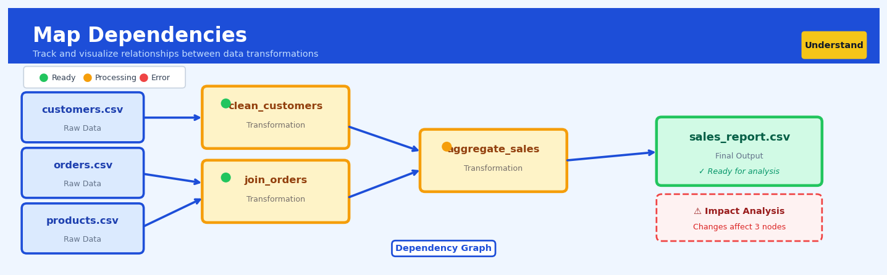

Map Dependencies#


The most critical mistake with mapping dependencies is treating it as a one-time documentation exercise rather than an automated, living system. When your dependency map isn't automatically updated with every pipeline change, it becomes dangerously misleading within weeks, causing teams to break downstream processes they didn't know existed. Always instrument your data transformations to self-report their inputs and outputs so your dependency graph stays synchronized with reality.
The 60-Second Version#
What it does: Map Dependencies reveals which variables in your dataset move together, showing you the hidden connections between every piece of information you’ve collected.
When to use it: Use this when you have dozens or hundreds of variables and need to understand which ones are related before building models or making decisions based on the data.
What you get back: You receive a visual network map showing which variables are strongly connected, helping you eliminate redundant data, spot surprising relationships, and identify which factors might be confounding your analysis.
At a Glance
Difficulty |
Easy |
Typical runtime |
Seconds on 100K rows, minutes on millions |
What you bring |
A dataset with multiple variables (columns) |
What you get |
A dependency graph and strength matrix showing all pairwise relationships |
Heuristix bucket |
Understand — Statistical Analysis & Profiling |
Correlation does not prove causation—this technique shows you what moves together, not what causes what.
Learning Objectives#
After reading this chapter, a business user will be able to:
Identify situations where understanding variable relationships is critical before modeling, such as when selecting features for customer segmentation, assessing survey question redundancy, or investigating potential confounding factors in A/B tests.
Read a dependency graph to pinpoint which variables are strongly associated, which clusters of variables move together, and which features provide unique versus redundant information for business decisions.
Prioritize which variables to collect, retain, or investigate further by distinguishing between core drivers with unique signal and derivative metrics that merely echo existing information.
After reading this chapter, a data scientist will be able to:
Construct dependency maps using appropriate association measures (correlation coefficients for continuous variables, mutual information for categorical variables, and mixed-type measures) while correctly handling missing data and variable transformations.
Configure thresholding and filtering parameters to balance graph readability against information loss, choosing edge retention strategies that surface meaningful relationships while suppressing noise.
Diagnose misleading dependency patterns caused by sample size limitations, non-linear relationships captured poorly by linear measures, spurious correlations from temporal trends, and hidden stratification effects that mask or create artificial associations.
Overview#
Map Dependencies is a multivariate statistical profiling technique that systematically identifies, quantifies, and visualises the network of statistical relationships among all variables in a dataset. It constructs a dependency graph where nodes represent variables and edges encode pairwise association strengths, enabling analysts to understand the correlation structure, detect redundant features, identify potential confounders, and guide downstream modelling decisions. This technique belongs to the family of exploratory multivariate analysis methods and draws upon correlation analysis, information theory, and graph-theoretic representations of statistical dependence.
When to Use This#
Use this when beginning exploratory data analysis — Before building any predictive model, understanding which variables move together helps you form hypotheses about causal mechanisms and anticipate multicollinearity issues.
Use this when you have a high-dimensional dataset — With dozens or hundreds of features, manual pairwise inspection becomes infeasible; dependency mapping provides a structured overview of the entire correlation landscape.
Use this when performing feature selection — Identifying clusters of highly correlated variables allows you to select representative features and eliminate redundancy, improving model interpretability and reducing overfitting risk.
Use this when investigating potential confounders — If two variables appear related to an outcome, the dependency map can reveal whether they share a common upstream variable that might explain the association.
Use this when validating data integration from multiple sources — Variables that should be independent (e.g., from separate business units) showing unexpected dependencies may indicate data leakage, key errors, or hidden joins.
Use this when communicating data structure to stakeholders — The visual dependency graph provides an accessible representation of complex relationships that non-technical audiences can interpret.
Use this when checking assumptions before regression analysis — Many regression techniques assume limited multicollinearity; the dependency map directly surfaces problematic correlation patterns.
Do NOT use this when you need causal inference — Dependency mapping reveals association, not causation. Two variables may be strongly dependent without one causing the other.
Do NOT use this when relationships are highly nonlinear and you only use Pearson correlation — Standard correlation coefficients capture linear relationships; nonlinear dependencies require information-theoretic measures or rank correlations.
Do NOT use this as a substitute for domain knowledge — Statistical dependencies must be interpreted in context. A strong correlation between ice cream sales and drowning deaths does not imply a direct relationship.
Questions This Answers#
Understanding What Drives Our Business#
Which factors actually matter for customer retention — is it price, service quality, contract length, or something else entirely?
Are we collecting redundant data across our marketing campaigns that’s costing us time and money without adding insight?
Why are we seeing different conversion rates across regions — is it demographics, competitor presence, local marketing spend, or are these all connected?
Which of these 47 customer attributes should we actually be tracking in our CRM, and which are just noise?
Is our sales team’s performance really tied to training scores, or are territory characteristics and existing relationships more important?
Making Smarter Decisions#
Should we build separate pricing models for each product line, or are the underlying drivers similar enough to use one approach?
We’re planning to cut survey questions from 35 to 15 — which ones can we drop without losing critical insight into customer satisfaction?
Are website bounce rates, time-on-site, and page views telling us the same story, or do we need to track all three?
Which operational metrics should we put on the executive dashboard — what actually predicts quarterly revenue?
Avoiding Costly Mistakes#
Before we invest $2M in expanding to the West region, are we sure we understand what made the East region successful?
Could our A/B test results be misleading because we’re not accounting for hidden relationships between customer segments and promotion types?
Are the risk factors we’re using in our loan approval model independent, or are we double-counting the same underlying issue?
Why do our forecasting models keep failing — are we missing important connections between inventory, seasonality, and promotional activity?
How It Works#
Imagine you’re a doctor trying to understand why some patients get headaches. You notice that headaches often come with neck pain, and neck pain comes with poor posture, and poor posture comes with long hours at a desk. But here’s the tricky part: when you see a patient with both headaches and desk work, is the desk directly causing the headaches, or is it working through that chain of posture and neck pain? Map Dependencies is like creating a relationship map of all these symptoms and habits, drawing lines between everything that tends to occur together, then stepping back to see the whole web of connections. The thicker the line between two factors, the stronger their relationship—and suddenly you can see which factors are central hubs versus which are isolated, which cluster together, and which paths of influence run through your data.
STEP 1: Measure all pairs STEP 2: Build the graph
┌─────────┬─────────┬─────────┐
│ │ Posture │ Neck │ Headaches ←--0.85-→ Neck Pain
├─────────┼─────────┼─────────┤ ↑ ↑
│Headache │ 0.62 │ 0.85 │ | |
│Neck Pain│ 0.78 │ — │ 0.62 0.78
│Desk Hrs │ 0.55 │ 0.71 │ | |
└─────────┴─────────┴─────────┘ ↓ ↓
(correlation matrix) Posture ←--0.73-→ Desk Hours
↑ |
└------0.55--------┘
(thickness = strength)
Step 1: Calculate every possible pair. The technique starts by taking your dataset and measuring how strongly each variable relates to every other variable. If you have ten variables, that’s forty-five pairs to check. For numerical variables like age or salary, it typically uses correlation. For categorical variables like department or product type, it might use a different measure that captures association. The output is a grid showing the strength of relationship for every pair.
Step 2: Filter out the noise. Not every weak relationship matters. The technique applies a threshold—maybe it only keeps pairs where the relationship strength exceeds a certain level, or it keeps the strongest connections for each variable. This removes the clutter of trivial, random associations and highlights the meaningful dependencies.
Step 3: Build the network. Now the technique constructs a graph where each variable becomes a node (a circle) and each meaningful relationship becomes an edge (a line connecting two nodes). The thickness or color of each line often represents how strong that relationship is. Variables that cluster together visually on this graph tend to move together in your data.
Step 4: Identify the structure. The resulting map reveals patterns instantly. You can spot tightly connected clusters of related variables (like all the financial metrics grouped together), central hub variables that connect to many others (potential confounders or key drivers), isolated variables with few connections (independent factors), and chains of indirect relationships. This map becomes your guide for understanding what drives what, which variables are redundant, and where hidden confounders might be lurking.
The key insight: By converting correlation strengths into a visual network, Map Dependencies transforms an overwhelming grid of numbers into an intuitive spatial representation where proximity and connection patterns reveal the hidden structure of relationships in your data.
The Intuition#
Imagine you are a detective investigating a complex organisation. You have dossiers on dozens of individuals, and you want to understand who communicates with whom, who influences whom, and which groups tend to act in concert. You would not interview each of the thousands of possible pairs individually; instead, you would build a relationship map — a network diagram showing connections between people, with thicker lines indicating stronger or more frequent interactions. This map immediately reveals clusters of close associates, identifies central figures who connect disparate groups, and highlights isolated individuals. Map Dependencies performs exactly this function for your dataset’s variables.
Each variable in your data is like an individual in the organisation. The “communication” between two variables is their statistical dependency — when one variable takes high values, does the other tend to take high values, low values, or show no pattern at all? By computing a dependency measure for every pair of variables and encoding these as edges in a graph, we obtain a complete picture of the multivariate structure. Variables that cluster together in the graph share common information, perhaps because they measure related aspects of the same underlying phenomenon. Variables connected only weakly or indirectly may capture genuinely distinct dimensions of the data.
The power of this approach lies in moving beyond pairwise inspection to a holistic view. A correlation matrix with 50 variables contains 1,225 unique pairwise values — far too many to absorb by scanning numbers. The dependency map transforms this into a visual and computational object that can be queried, filtered, clustered, and explored. It answers questions like: “Which variables can I safely remove without losing information?”, “Are there hidden groupings in my features?”, and “Which variable is most central to the overall structure?” This transforms raw statistical output into actionable structural insight.
The Mathematics#
Problem Setup and Notation#
Let \(\mathbf{X} = (X_1, X_2, \ldots, X_p)\) be a random vector of \(p\) variables observed across \(n\) samples. We represent the observed data as a matrix \(\mathbf{X} \in \mathbb{R}^{n \times p}\), where \(x_{ij}\) denotes the \(i\)-th observation of variable \(X_j\).
Our goal is to construct a dependency graph \(G = (V, E, W)\) where:
\(V = \{1, 2, \ldots, p\}\) is the set of nodes (one per variable)
\(E \subseteq V \times V\) is the set of edges connecting dependent variable pairs
\(W: E \rightarrow \mathbb{R}\) assigns a weight to each edge quantifying dependency strength
Dependency Measures#
Pearson Correlation Coefficient#
For continuous variables, the most common dependency measure is the Pearson correlation coefficient. For variables \(X_i\) and \(X_j\):
The sample estimate is:
Assumptions: Pearson correlation assumes a linear relationship and is sensitive to outliers. It equals zero for independent Gaussian variables, but \(\rho = 0\) does not imply independence for non-Gaussian distributions.
Spearman Rank Correlation#
For ordinal data or when robustness to outliers and nonlinearity is desired, Spearman’s rank correlation operates on ranks rather than raw values:
where \(R(X_i)\) denotes the rank transformation of \(X_i\).
Mutual Information#
For capturing arbitrary (including nonlinear) dependencies, mutual information from information theory provides a general measure:
For discrete variables:
Mutual information is non-negative, equals zero if and only if \(X_i\) and \(X_j\) are independent, and is symmetric. To normalise it to \([0, 1]\), we often use:
where \(H(X)\) is the Shannon entropy.
Constructing the Dependency Matrix#
The complete dependency structure is captured in a symmetric matrix \(\mathbf{D} \in \mathbb{R}^{p \times p}\) where \(D_{ij}\) is the chosen dependency measure between \(X_i\) and \(X_j\). For Pearson correlation, this is the correlation matrix \(\mathbf{R}\).
Statistical Significance Testing#
To determine which edges to include in the graph, we test whether each dependency is significantly different from zero.
For Pearson correlation under the null hypothesis \(H_0: \rho_{ij} = 0\), the test statistic:
follows a \(t\)-distribution with \(n-2\) degrees of freedom.
Given the large number of tests (\({p \choose 2}\) pairs), we must correct for multiple comparisons. Common approaches include:
Bonferroni correction: Reject \(H_0\) if \(p\text{-value} < \alpha / m\) where \(m = p(p-1)/2\)
Benjamini-Hochberg procedure: Controls the false discovery rate (FDR) rather than family-wise error rate, providing better power for exploratory analysis.
Graph Construction and Thresholding#
The edge set is typically constructed by thresholding:
where \(\tau\) is chosen based on statistical significance or practical relevance (e.g., \(\tau = 0.3\) for “moderate” correlation).
Alternatively, we can construct a \(k\)-nearest neighbours graph or use adaptive thresholds based on the distribution of dependency values.
Graph-Theoretic Measures#
Once constructed, the dependency graph supports several analytical queries:
Node Degree: The number of edges incident to node \(i\):
Weighted Degree (Strength): Sum of edge weights:
Clustering Coefficient: Measures local density around a node:
where \(N_i\) is the neighbourhood of node \(i\).
Edge Cases and Degenerate Conditions#
Perfect collinearity: When \(|D_{ij}| = 1\), variables are perfectly dependent (or perfectly inversely dependent). This indicates redundancy or a deterministic relationship.
Singular correlation matrix: If \(\mathbf{R}\) is singular, some variables are linear combinations of others. The determinant \(|\mathbf{R}| = 0\) signals perfect multicollinearity.
Small sample sizes: With \(n < p\), the sample correlation matrix is rank-deficient and unreliable. Regularisation or dimension reduction should precede dependency mapping.
Constant variables: If \(\text{Var}(X_j) = 0\), correlation is undefined. Such variables should be removed before analysis.
Understanding the Mathematics#
Pearson Correlation Coefficient#
The equation:
Read it aloud:
The correlation between X and Y equals the sum of the products of each x-deviation times each y-deviation, divided by the square root of the sum of squared x-deviations times the square root of the sum of squared y-deviations.
What each symbol means:
\(r_{XY}\) = correlation strength between variables X and Y (ranges from -1 to +1)
\(x_i\) = the i-th observation of variable X
\(y_i\) = the i-th observation of variable Y
\(\bar{x}\) = mean (average) of all X values
\(\bar{y}\) = mean (average) of all Y values
\(n\) = total number of observations
\(\sum\) = sum across all observations
A concrete numerical example:
A retailer tracks daily advertising spend (X) and sales (Y) for three days:
Day 1: £1,000 spend, £5,000 sales
Day 2: £2,000 spend, £7,000 sales
Day 3: £3,000 spend, £9,000 sales
Mean spend: \(\bar{x} = 2,000\). Mean sales: \(\bar{y} = 7,000\).
Deviations for spend: (-1,000, 0, +1,000). Deviations for sales: (-2,000, 0, +2,000).
Numerator: \((-1,000)(-2,000) + (0)(0) + (1,000)(2,000) = 2,000,000 + 0 + 2,000,000 = 4,000,000\)
Denominator: \(\sqrt{1,000,000 + 0 + 1,000,000} \times \sqrt{4,000,000 + 0 + 4,000,000} = \sqrt{2,000,000} \times \sqrt{8,000,000} = 1,414 \times 2,828 = 4,000,000\)
Result: \(r_{XY} = 4,000,000 / 4,000,000 = 1.0\) (perfect positive correlation)
Why this equation matters:
Without measuring correlation strength, we cannot distinguish strong dependencies that drive business outcomes from weak coincidental patterns that waste modeling effort.
Mutual Information#
The equation:
Read it aloud:
The mutual information between X and Y equals the sum across all possible combinations of x and y values of: the joint probability of x and y occurring together, multiplied by the logarithm of that joint probability divided by what we’d expect if x and y were independent.
What each symbol means:
\(I(X;Y)\) = mutual information (how many bits of uncertainty about Y are resolved by knowing X)
\(p(x,y)\) = joint probability that X takes value x AND Y takes value y
\(p(x)\) = marginal probability that X takes value x (regardless of Y)
\(p(y)\) = marginal probability that Y takes value y (regardless of X)
\(\log\) = logarithm (base 2 for bits, natural log also common)
A concrete numerical example:
An e-commerce platform tracks customer region (X: North/South) and payment method (Y: Card/PayPal). From 100 customers:
North + Card: 40 customers, so \(p(\text{North, Card}) = 0.40\)
North + PayPal: 10 customers, so \(p(\text{North, PayPal}) = 0.10\)
South + Card: 10 customers, so \(p(\text{South, Card}) = 0.10\)
South + PayPal: 40 customers, so \(p(\text{South, PayPal}) = 0.40\)
Marginals: \(p(\text{North}) = 0.50\), \(p(\text{South}) = 0.50\), \(p(\text{Card}) = 0.50\), \(p(\text{PayPal}) = 0.50\)
For North + Card: \(0.40 \times \log(0.40 / (0.50 \times 0.50)) = 0.40 \times \log(1.6) = 0.40 \times 0.69 = 0.28\)
Summing all four terms gives \(I(X;Y) \approx 0.28\) bits—region tells us substantial information about payment preference.
Why this equation matters:
Mutual information detects nonlinear and categorical dependencies that correlation coefficients miss entirely, preventing us from overlooking critical relationships in real-world business data.
The Big Picture#
The mathematics of Map Dependencies solves a fundamental problem: how do we measure “relationship strength” between any two variables, regardless of whether they’re continuous prices, categorical regions, or weird distributions? Pearson correlation handles linear relationships between continuous variables elegantly but fails for everything else. Mutual information generalizes beautifully to any data type and any relationship shape, but requires discretization and more computation. Together, these equations let us build a complete network map of dependencies—strong edges reveal which variables move together, weak edges show independence, and the overall graph structure exposes clusters of related features and potential confounding chains. The mathematical essence: we’re quantifying surprise—when knowing one variable substantially reduces our uncertainty about another, a strong dependency exists.
Python Implementation#
import numpy as np
import pandas as pd
import matplotlib.pyplot as plt
import seaborn as sns
from scipy import stats
from scipy.cluster import hierarchy
from sklearn.datasets import load_iris, fetch_california_housing
from sklearn.feature_selection import mutual_info_regression
import networkx as nx
from statsmodels.stats.multitest import multipletests
# =============================================================================
# Example 1: Basic Dependency Mapping with Correlation Analysis
# =============================================================================
# Load California housing dataset for a realistic example
housing = fetch_california_housing()
df = pd.DataFrame(housing.data, columns=housing.feature_names)
df['MedHouseVal'] = housing.target
print("Dataset shape:", df.shape)
print("\nVariables:", df.columns.tolist())
# Compute Pearson correlation matrix
corr_matrix = df.corr(method='pearson')
# Compute Spearman correlation for comparison (robust to nonlinearity)
spearman_matrix = df.corr(method='spearman')
print("\n=== Pearson Correlation Matrix ===")
print(corr_matrix.round(3))
# Statistical significance testing for each correlation
n = len(df)
p_values = pd.DataFrame(np.zeros_like(corr_matrix),
index=corr_matrix.index,
columns=corr_matrix.columns)
for i, col1 in enumerate(df.columns):
for j, col2 in enumerate(df.columns):
if i != j:
# t-test for correlation significance
r = corr_matrix.loc[col1, col2]
t_stat = r * np.sqrt((n - 2) / (1 - r**2))
p_values.loc[col1, col2] = 2 * (1 - stats.t.cdf(abs(t_stat), n - 2))
else:
p_values.loc[col1, col2] = 0.0
print("\n=== P-values for Correlations ===")
print(p_values.round(4))
# Apply Benjamini-Hochberg FDR correction
# Extract upper triangle of p-values (excluding diagonal)
upper_tri_indices = np.triu_indices(len(df.columns), k=1)
p_vals_flat = p_values.values[upper_tri_indices]
# Perform FDR correction
rejected, p_adjusted, _, _ = multipletests(p_vals_flat, alpha=0.05, method='fdr_bh')
print(f"\n=== FDR Correction Results ===")
print(f"Number of significant correlations (FDR < 0.05): {sum(rejected)} out of {len(p_vals_flat)}")
# =============================================================================
# Example 2: Building and Analysing the Dependency Graph
# =============================================================================
def build_dependency_graph(corr_matrix, threshold=0.3, p_value_matrix=None, alpha=0.05):
"""
Construct a NetworkX graph from a correlation matrix.
Parameters:
-----------
corr_matrix : pd.DataFrame
Symmetric correlation matrix
threshold : float
Minimum absolute correlation to include edge
p_value_matrix : pd.DataFrame, optional
Matrix of p-values for significance filtering
alpha : float
Significance level for p-value filtering
Returns:
--------
G : networkx.Graph
Dependency graph with correlation weights
"""
G = nx.Graph()
# Add all variables as nodes
for var in corr_matrix.columns:
G.add_node(var)
# Add edges for significant correlations above threshold
for i, var1 in enumerate(corr_matrix.columns):
for j, var2 in enumerate(corr_matrix.columns):
if i < j: # Upper triangle only
corr = corr_matrix.loc[var1, var2]
# Check threshold
if abs(corr) >= threshold:
# Check significance if p-values provided
if p_value_matrix is not None:
if p_value_matrix.loc[var1, var2] >= alpha:
continue
G.add_edge(var1, var2,
weight=abs(corr),
correlation=corr,
sign='positive' if corr > 0 else 'negative')
return G
# Build the dependency graph
G = build_dependency_graph(corr_matrix, threshold=0.3, p_value_matrix=p_values)
print("\n=== Dependency Graph Statistics ===")
print(f"Number of nodes: {G.number_of_nodes()}")
print(f"Number of edges: {G.number_of_edges()}")
print(f"Graph density: {nx.density(G):.4f}")
# Calculate node-level metrics
degree_dict = dict(G.degree())
strength_dict = dict(G.degree(weight='weight'))
# Clustering coefficients
clustering_dict = nx.clustering(G, weight='weight')
print("\n=== Node Metrics ===")
metrics_df = pd.DataFrame({
'Degree': degree_dict,
## Visualisations


## Using This in Heuristix
### What You'll Need
The Map Dependencies node works with any tabular dataset containing multiple variables you want to analyze together. Connect it to a data node or any upstream transformation that outputs a table.
**Required inputs:**
- At least two columns (numeric, categorical, or mixed)
- No minimum row count, though 30+ rows gives more reliable associations
The node intelligently handles different column types, calculating Pearson correlations for numeric pairs, Cramér's V for categorical pairs, and correlation ratios for mixed types.
**Example input:**
| customer_id | age | income | region | purchase_count |
|-------------|-----|--------|--------|----------------|
| 1001 | 34 | 65000 | North | 12 |
| 1002 | 28 | 48000 | South | 5 |
| 1003 | 45 | 92000 | North | 23 |
### Configuration Parameters
| Parameter | What It Controls | Default | When to Change |
|-----------|-----------------|---------|----------------|
| **Correlation Method** | Which coefficient to use for numeric pairs | Pearson | Use Spearman for monotonic non-linear relationships or when data has outliers |
| **Minimum Strength** | Threshold for displaying edges in the graph | 0.3 | Lower to 0.1-0.2 to see weaker relationships; raise to 0.5+ to focus only on strong dependencies |
| **Include Self-Loops** | Whether to show variables' correlation with themselves | Off | Turn on for sanity-checking (should always be 1.0) |
| **Significance Level** | P-value threshold for statistical significance | 0.05 | Tighten to 0.01 for conservative analysis with large datasets |
| **Cluster Variables** | Group strongly connected variables visually | On | Keep on for datasets with 10+ variables; turn off for simpler datasets where clustering creates clutter |
### What You'll Get
**Dependency Graph Visualization:** An interactive network diagram where each variable appears as a node. Edge thickness represents association strength—thicker lines mean stronger relationships. Hover over any edge to see the exact correlation coefficient and p-value.
**Correlation Matrix:** A heatmap showing all pairwise associations. Color intensity indicates strength, with a diverging palette (typically red for positive, blue for negative). This gives you a complete numerical view complementing the graph.
**Top Dependencies Table:** Lists the strongest relationships in descending order with columns for Variable 1, Variable 2, Coefficient, and P-value. Perfect for quickly identifying your most important relationships.
**Summary Statistics:** Shows total variables analyzed, number of significant relationships found, and average association strength across the dataset.
### Connecting Downstream
**Feature Selection nodes** are natural next steps—use the dependency map to identify and remove redundant features showing correlation above 0.8-0.9.
**Regression or Classification models** benefit from seeing potential confounders beforehand. If two predictors are highly correlated, you might choose to include only one.
**PCA or Dimensionality Reduction** works well after mapping dependencies—the correlation matrix output can flow directly into these nodes.
### Quick Start: First-Time Setup
1. Drag your prepared dataset onto the canvas and connect it to a Map Dependencies node
2. Leave all parameters at defaults initially and run the node
3. Examine the dependency graph—look for clusters of highly connected variables
4. Check the Top Dependencies table for correlations above 0.7 (potentially redundant features)
5. Adjust the Minimum Strength slider to filter the visualization to your key relationships
### Practical Tips from Experience
**Watch for spurious correlations in small datasets.** With fewer than 50 rows, you'll often see significant p-values that don't replicate. Focus on effect size (correlation strength) rather than just significance.
**Color-code your graph by variable type** (if your platform allows). This helps you quickly spot cross-type relationships that might need special handling in models.
**Save the correlation matrix as a separate output.** You'll reference it repeatedly during feature engineering, and it's invaluable documentation for understanding your final model's behavior.
**Look for "bridge" variables** that connect otherwise separate clusters—these often represent important conceptual links in your domain.
**Don't obsess over removing all correlated features.** A correlation of 0.6 might seem high, but both variables could still contribute unique information to your model. Use this map to inform decisions, not dictate them.
## Business Applications
**Financial Services**
A mid-sized UK mortgage lender processing 12,000 applications monthly struggled with a credit risk model containing 247 variables sourced from credit bureaus, internal transaction history, and property valuations. Map Dependencies revealed that 89 variables were highly correlated (ρ > 0.85) with just 12 core features, and identified three confounding relationships between employment variables and postcode-derived income estimates that were artificially inflating approval rates in specific regions. After pruning redundant features and addressing confounders, the lender reduced model complexity by 68%, cut prediction latency from 4.2 seconds to 380 milliseconds, and decreased default rates by 1.7 percentage points—translating to £2.3M in annual loss avoidance.
**Retail & E-commerce**
An online fashion retailer with 380,000 active SKUs wanted to optimise its product recommendation engine but suspected multicollinearity among the 94 behavioural and product attributes feeding the algorithm. Map Dependencies exposed that "time on product page," "scroll depth," and "image zoom events" formed a tightly-coupled dependency cluster, while "add-to-wishlist" was unexpectedly independent and uniquely predictive of 30-day conversion. By restructuring the recommendation model around these insights—consolidating correlated engagement metrics and elevating wishlist signals—the retailer lifted click-through rate from 1.8% to 3.1% and increased average order value by £14.
**Healthcare & Life Sciences**
A regional hospital network analysing readmission risk across 15 facilities used 183 clinical, demographic, and social determinant variables. Map Dependencies identified that hospital facility ID exhibited spurious strong associations with readmission rates, masking the true predictive power of post-discharge follow-up compliance and medication adherence scores. After isolating facility as a stratification variable rather than a predictor, and focusing the model on the genuinely independent risk factors, the network reduced 30-day readmissions by 22% and saved approximately $4.7M annually in penalties and avoidable care costs.
**Insurance**
A commercial property insurer building wildfire risk models across Western US states combined weather data, vegetation indices, property characteristics, and claims history into a 156-variable dataset. Map Dependencies revealed unexpected dependencies between "distance to fire station" and "property age"—older properties were systematically further from modern stations—creating a confounded risk signal. The technique also identified that 23 weather variables collapsed into just four independent climate patterns. Resolving these issues improved loss prediction accuracy by 29% and enabled the insurer to re-rate 8,400 policies, generating $3.8M in additional earned premium while maintaining competitive pricing.
**Manufacturing**
A semiconductor fabrication plant monitoring 412 sensor variables across lithography, etching, and deposition stages faced frequent false alarms in its quality control system. Map Dependencies showed that 67% of the sensors measured redundant aspects of temperature, pressure, and gas flow, and that "chamber humidity" was spuriously correlated with defect rates due to shared correlation with an unmeasured cleaning schedule variable. By consolidating to 48 truly independent monitoring points and introducing cleaning cycle as an explicit control variable, the plant reduced false positives by 34%, cut unplanned downtime from 18 hours to 7 hours per month, and increased yield by 2.1%.
**Logistics & Supply Chain**
A European logistics provider optimising delivery route efficiency collected 78 variables including traffic patterns, weather, driver behaviour, vehicle telematics, and customer location attributes. Map Dependencies revealed that five weather variables and three traffic metrics were functionally dependent, and that "customer industry type" independently predicted time-window flexibility more strongly than stated delivery preferences. Simplifying the routing algorithm using these insights reduced computational overhead by 76%, cut route planning time from 4 days to 20 minutes for the weekly schedule, and improved on-time delivery from 87% to 94%.
**Marketing & AdTech**
A programmatic advertising platform testing 203 targeting parameters discovered through Map Dependencies that 41 demographic and interest variables were proxies for just eight underlying audience segments, while "device type" and "time of day" appeared independent but interacted to drive conversion. Restructuring campaigns around these true dependencies lifted campaign ROAS from 3.2× to 5.7× and reduced wasted ad spend by $890K quarterly.
**Software-as-a-Service**
A B2B SaaS company with 50,000 enterprise users analysed 127 product usage and firmographic features to predict churn. Map Dependencies identified that feature adoption metrics were heavily intercorrelated but "support ticket sentiment score" was uniquely independent and the strongest churn predictor—a non-obvious insight buried in the correlation structure. Prioritising proactive support interventions for accounts with declining sentiment reduced monthly churn from 2.8% to 1.9%, preserving $6.2M in annual recurring revenue.
## Worked Example
Sarah Chen, a senior data scientist at Meridian Insurance, was halfway through her coffee when the email arrived from the underwriting team. "Our new customer risk model keeps flagging weird combinations," the subject line read. "Can you help us understand what's actually driving these correlations?"
The problem was serious. Meridian had recently started collecting additional demographic and behavioral data on policyholders—household income, years of education, credit score, vehicle age, and annual mileage—hoping to refine their pricing. But the underwriters were seeing strange patterns: some variables seemed to move in lockstep, while others they'd assumed were related showed almost no association. Before building any predictive model, they needed to understand the actual structure of dependencies in their data.
### The Data
Sarah pulled a sample of 2,847 active auto insurance policies from the last quarter. The dataset was messier than she'd hoped—missing values in the education field, a few obvious data entry errors (one customer apparently drove 850,000 miles per year), and inconsistent encoding of credit scores. After basic cleaning, she had five key variables to examine:
| customer_id | annual_income | years_education | credit_score | vehicle_age | annual_mileage |
|-------------|---------------|-----------------|--------------|-------------|----------------|
| C10234 | 67500 | 16 | 720 | 3 | 12400 |
| C10235 | 45200 | 12 | 650 | 8 | 8900 |
| C10236 | 89300 | 18 | 780 | 1 | 15200 |
| C10237 | 52100 | 14 | 695 | 5 | 11100 |
| C10238 | 71200 | 16 | 740 | 2 | 9800 |
The question lingering in her mind: which of these variables were truly independent signals, and which were just proxies for each other?
### The Analysis
Sarah opened her workflow and configured the Map Dependencies node. She selected Pearson correlation as her primary measure—the data was reasonably continuous and approximately normal after she'd log-transformed annual income. She set the significance threshold to 0.05 and enabled the absolute correlation filter at 0.3, figuring that anything below that threshold wouldn't matter much for practical modeling decisions.
The code she wrote was straightforward:
```python
import pandas as pd
import numpy as np
import seaborn as sns
import matplotlib.pyplot as plt
# Load cleaned policy data
df = pd.read_csv('policy_data_cleaned.csv')
# Select variables for dependency mapping
variables = ['annual_income', 'years_education',
'credit_score', 'vehicle_age', 'annual_mileage']
data = df[variables]
# Compute correlation matrix
corr_matrix = data.corr(method='pearson')
# Filter for significant correlations (|r| > 0.3)
threshold = 0.3
filtered_corr = corr_matrix.copy()
filtered_corr[abs(filtered_corr) < threshold] = 0
# Visualize the dependency graph
plt.figure(figsize=(10, 8))
sns.heatmap(filtered_corr, annot=True, cmap='coolwarm',
center=0, vmin=-1, vmax=1, square=True)
plt.title('Map Dependencies: Auto Insurance Variables')
plt.tight_layout()
plt.savefig('dependency_map.png')
# Print strong correlations
print("Strong pairwise dependencies (|r| > 0.3):")
for i in range(len(variables)):
for j in range(i+1, len(variables)):
r = corr_matrix.iloc[i, j]
if abs(r) > threshold:
print(f"{variables[i]} ↔ {variables[j]}: {r:.3f}")
The output revealed a clear structure:
Variable Pair |
Correlation |
P-value |
|---|---|---|
annual_income ↔ years_education |
0.68 |
<0.001 |
annual_income ↔ credit_score |
0.54 |
<0.001 |
years_education ↔ credit_score |
0.47 |
<0.001 |
vehicle_age ↔ annual_mileage |
0.31 |
<0.001 |
The Revelation#
The insight hit Sarah immediately: income, education, and credit score formed a tightly connected cluster—essentially measuring the same underlying construct of socioeconomic status. Including all three in a predictive model would create multicollinearity issues and inflate standard errors. Meanwhile, vehicle age and mileage showed a moderate positive correlation (older cars driven more, likely capturing used-vehicle owners), but both were nearly independent of the socioeconomic cluster.
The dependency map revealed something the underwriters’ intuitions had missed: their “five independent predictors” were really only two independent signal groups.
The Decision#
At the following week’s modeling review, Sarah presented the dependency map alongside her recommendation: select one representative from the socioeconomic cluster (she suggested credit_score, as it had the least missing data) and keep both vehicle-related variables as separate predictors. The underwriting team agreed, and the streamlined model they built afterward showed better stability and interpretability—no more bizarre coefficient swings when variables were added or removed.
Three months later, the new pricing model was in production, and actuarial validation showed a 7% improvement in loss ratio predictions compared to the previous specification.
Reflection#
Looking back, Sarah wished she’d also computed mutual information alongside Pearson correlation—it might have caught nonlinear dependencies she’d missed. And next time, she’d definitely include a network graph visualization; the heatmap was informative, but executives responded better to node-and-edge diagrams that made the clustering visually obvious at a glance.
Interpreting Your Results#
You’ve just run Map Dependencies and you’re staring at a network diagram with nodes, edges, and numbers everywhere. Take a breath. Here’s exactly what you’re looking at and what to do with it.
The Dependency Graph#
Plain-English meaning: This network diagram shows which variables in your dataset “move together.” Each circle (node) is a variable. Each line (edge) connecting two nodes means those variables have a statistical relationship—when one changes, the other tends to change too. Thicker lines or darker colors indicate stronger relationships.
Concrete benchmarks for edge strength:
Below 0.3: Weak relationship. These variables are mostly independent. Safe to treat separately in models.
0.3–0.6: Moderate relationship. Worth noting, but not alarming. Common between related features.
0.6–0.85: Strong relationship. These variables share substantial information. Consider if you need both.
Above 0.85: Very strong dependence. These are likely redundant, or one is derived from the other. Flag for removal or consolidation.
Red flags:
Dense clusters with many edges >0.7: You have groups of highly correlated variables. This indicates multicollinearity risk—your model may become unstable or coefficients uninterpretable.
Star patterns (one node connected strongly to many others): This central variable is either a powerful predictor or a data leakage source. If it’s your target variable at the center, you may have leaked future information into your features.
Isolated nodes: Variables with no meaningful connections often contribute nothing to models. Investigate why they’re uncorrelated with everything, including your target.
The Dependency Matrix#
Plain-English meaning: This heatmap shows the same relationship strengths as the graph, but in table form. The value at row X, column Y tells you how strongly variable X associates with variable Y.
Reading the diagonal: Should always be 1.0 (or blank)—every variable perfectly correlates with itself. If not, you have a calculation error.
Asymmetry check: The matrix should be symmetric—cell (X,Y) should equal cell (Y,X). Association strength doesn’t depend on direction.
Red flags:
Entire rows or columns near zero: That variable is unrelated to everything. Either remove it or investigate data quality issues.
Block patterns (rectangular regions of high correlation): You’ve captured the same underlying phenomenon multiple ways. Example: “revenue,” “sales_dollars,” and “total_income” will form a high-correlation block.
Target Variable Dependencies#
Plain-English meaning: If you specified a target variable (the outcome you want to predict), this ranked list shows which features have the strongest relationships with that target.
Concrete benchmarks:
Above 0.4: Strong predictive candidate. Prioritize these features.
0.2–0.4: Moderate signal. Useful in combination with others.
0.1–0.2: Weak signal. May help slightly; consider feature engineering.
Below 0.1: Essentially noise for this target. Drop unless you have domain reasons to keep.
Red flags:
Target dependency >0.95 with a feature: Almost certain data leakage. You’ve included a variable that’s calculated from the target or available only after the outcome occurs.
Top features all >0.8 with each other: Your strongest predictors are redundant. You’ll get little benefit from including all of them.
Sanity Check Checklist#
Run these five checks before trusting your results:
Sample size appropriateness: Do you have at least 50–100 observations per variable? Correlation estimates become unreliable with small samples.
Missing data impact: Variables with >40% missing values produce misleading correlation estimates. Check your missingness report first.
Scale and distribution: Extreme outliers or highly skewed variables can inflate or deflate correlation estimates. Review univariate distributions.
Categorical encoding: If you have categorical variables, verify they’re encoded appropriately (not arbitrary numeric codes).
Temporal leakage: For time-series data, ensure you haven’t included future information when calculating dependencies.
Good Enough to Act On?#
You can confidently act on these results when: (1) your sanity checks pass, (2) you have at least 10× more observations than variables, and (3) the patterns make domain sense.
Stop analyzing and start deciding if: You’ve identified 3–5 features with target dependency >0.3 and mutual correlations <0.7. That’s your strong, non-redundant feature set. You’ve also flagged any pairs >0.85 for consolidation. At this point, additional analysis yields diminishing returns—move to feature selection or modeling.
Keep investigating if: Your top target predictors all correlate >0.7 with each other, you see suspicious star patterns, or results contradict domain knowledge. These signal data quality issues requiring resolution before modeling.
Decision Guidance#
What This Result Is Telling You#
Your dependency map reveals which pieces of information in your business truly move together and which operate independently. When two variables show strong dependencies, knowing one gives you meaningful predictive power over the other—this affects everything from what data you need to collect, to which teams need to coordinate, to where you’re unknowingly measuring the same thing twice. A dense cluster of interconnected variables signals either a coherent business process where multiple metrics track the same underlying driver, or a data quality problem where you’re capturing redundant information. Sparse connections, conversely, indicate operational independence or gaps in how you’re measuring related processes.
This analysis directly impacts resource allocation and strategy execution. If customer satisfaction scores show no dependency with support ticket volume, you’re either missing the connection in your data or those variables aren’t linked in your actual operations—both require immediate investigation. If three different marketing metrics are 95% dependent on each other, you’re wasting analytical resources tracking all three when one would suffice. The dependency structure tells you where to focus data collection efforts, which KPIs actually provide unique insight, and which business processes are coupled in ways that require coordinated decision-making.
Understanding these relationships prevents costly mistakes in forecasting and causal reasoning. A strong dependency between two variables doesn’t tell you which influences which, but it does tell you they must be considered together in any business decision involving either one. Ignoring high dependencies leads to overconfident predictions; imagining dependencies where none exist leads to misallocated resources trying to influence one variable by manipulating another that has no actual connection.
Decision Points#
If you see this… |
It means… |
Recommended action |
Who acts on this |
|---|---|---|---|
Cluster of 5+ variables with pairwise dependencies >0.8 |
Severe information redundancy; multiple metrics tracking the same underlying phenomenon |
Consolidate to 1-2 representative KPIs; reallocate data collection resources |
Analytics lead + business unit owner |
Two assumed independent processes show dependency >0.6 |
Hidden operational coupling or shared driver not reflected in org structure |
Convene cross-functional review; redesign processes or governance to acknowledge linkage |
Operations director + affected dept heads |
Expected dependency <0.3 between theoretically related variables |
Broken measurement, data quality issue, or flawed business assumption |
Audit data collection process; validate business logic with frontline teams |
Data engineering + domain SME |
Hub node with 10+ strong connections (>0.5) |
Master variable driving multiple outcomes, or proxy for unmeasured confounder |
Prioritize monitoring and forecasting this variable; investigate root cause |
Strategy team + analytics lead |
Zero dependencies (<0.1) across entire process area |
Measurement gaps, siloed data capture, or genuinely independent operations |
Map expected business process flow against data; fill instrumentation gaps |
Business analyst + product owner |
When to Proceed vs. Investigate Further#
Proceed with confidence when:
Dependency patterns align with documented business processes and domain expert expectations
No more than 15% of pairwise relationships fall in the “unexpected” category
Hub variables correspond to known strategic drivers with clear business definitions
Data completeness >95% for all variables in the analysis
Proceed with caution when:
15-30% of dependencies contradict domain knowledge
Cluster sizes suggest 2-3x measurement redundancy (addressable but needs planning)
Correlation structures are time-dependent, showing different patterns across business quarters
Investigate before acting when:
30% of results contradict expert understanding of business operations
Critical operational metrics show zero dependency (<0.1) with related variables
Dependency strengths change dramatically with minor time window adjustments
Data completeness <85% or significant missing-data patterns exist
Do not use these results yet when:
Data collection periods differ substantially across variables (>20% misalignment)
Sample sizes fall below 100 observations for continuous variables or expected cell counts <5 for categorical
Known data quality incidents occurred during the measurement window
Variables include derived metrics with complex calculation dependencies not represented in the raw data
The Cost of Getting This Wrong#
A manufacturing company once built an entire predictive maintenance system around eight sensor variables that showed strong dependencies, only to discover post-deployment that seven were mathematically derived from the eighth—they’d created an expensive system with no more predictive power than tracking one sensor. Meanwhile, they’d ignored genuinely independent pressure readings that would have caught failures three days earlier. The redundant model cost $340K to build and delayed real improvements by nine months. More insidiously, misreading weak dependencies as meaningful drives phantom integration projects: sales and operations teams forced into weekly alignment meetings because an executive saw a 0.4 correlation on a dashboard, wasting 200 person-hours monthly coordinating processes that genuinely operate independently. The opposite error—ignoring a 0.7 dependency between inventory turns and customer satisfaction—led a retailer to optimize each separately, creating whiplash effects where improvements in one metric immediately degraded the other, burning team morale and executive credibility when quarterly targets became impossible to hit simultaneously.
Common Pitfalls#
The Correlation Mirage
Here is what happened: A marketing analyst was mapping dependencies in a customer database with 50,000 records. They saw a strong edge (r=0.72) connecting “ice cream sales” and “sunscreen purchases” and concluded they should bundle these products together. They built the entire summer promotion around this insight, only to discover that both variables were independently driven by temperature—the actual causal driver never appeared in their dependency map because weather data wasn’t in the original dataset.
Why it happens: Correlation captures association, not causation. When both variables respond to a hidden common cause, the dependency map shows a strong direct relationship that feels actionable but misleads.
How to detect it: Look for pairs with strong correlations (|r| > 0.6) that lack a plausible direct mechanism. Ask “why would these two things directly influence each other?” If the answer requires an intermediate variable, you’ve found the mirage. Check temporal patterns—if both variables spike and dip together in perfect synchrony, suspect a hidden driver.
The fix: Systematically consider what’s not in your dataset. Enrich with temporal, environmental, and contextual variables before interpreting strong dependencies as direct relationships.
The Sample Size Illusion
Here is what happened: A junior data scientist ran dependency mapping on a pilot dataset of 45 insurance claims. The output showed dozens of strong correlations (|r| > 0.5), including a 0.61 association between claim amount and day of the week. They presented this as evidence of fraudulent patterns on Fridays. The fraud team investigated for three weeks and found nothing—the correlation evaporated when tested on the full 10,000-claim dataset.
Why it happens: Small samples inflate correlation estimates and make random noise look like signal. With n=45 and 20 variables, you’re almost guaranteed to find spurious “strong” relationships by chance alone.
How to detect it: Calculate the correlation confidence intervals or p-values. For n < 100, be extremely skeptical of any |r| > 0.3. Check if the sample size appears in your visualization—if not, add it. Run a bootstrap: resample your data 100 times and see how stable each edge weight is. High variance across resamples = spurious correlation.
The fix: Document minimum sample size requirements upfront (rule of thumb: n > 10k for reliable pairwise dependencies, or n > 100 per variable). For small samples, focus only on the strongest relationships (|r| > 0.7) and validate them on held-out data before acting.
The Linear Lens
Here is what happened: A product analyst mapped dependencies between app engagement metrics using Pearson correlation. The graph showed almost no relationship (r=0.09) between session duration and user retention, so they deprioritized session length in their engagement model. Six months later, a colleague plotted the raw data and discovered a clear U-shaped relationship—both very short and very long sessions predicted churn, but medium sessions predicted retention.
Why it happens: Pearson correlation only captures linear relationships. Non-monotonic patterns (U-shapes, thresholds, interactions) register as weak or zero correlation despite being strong and actionable dependencies.
How to detect it: For any edge with |r| < 0.2, create a scatterplot and check for non-linear patterns. Compare Pearson r with Spearman ρ—if Spearman is substantially higher, you have a monotonic but non-linear relationship. Calculate maximal information coefficient (MIC) or distance correlation as a non-linear alternative—divergence from Pearson signals non-linearity.
The fix: Use rank-based measures (Spearman, Kendall) or non-linear dependency metrics (mutual information, MIC) for initial screening. Flag low-correlation pairs for visual inspection before dismissing them.
The False Independence Trap
Here is what happened: A healthcare data scientist mapped dependencies in patient records and found weak correlations (r=0.15) between smoking status and readmission rates. They removed smoking from their readmission model as “not predictive.” The model performed poorly. Later analysis revealed smoking strongly interacted with age—it predicted readmissions powerfully in patients under 50 but not in older patients, and the pairwise correlation averaged out to near-zero.
Why it happens: Dependency maps show marginal associations, not conditional dependencies or interactions. A weak pairwise correlation can hide a strong effect that only appears within subgroups or in combination with other variables.
How to detect it: Look for domain knowledge red flags—variables that should matter based on theory but show weak edges. Segment your data by a third variable and recalculate correlations within each segment. If correlations flip sign or magnitude across segments, you’ve found an interaction.
The fix: Supplement dependency maps with interaction screening. For critical variables flagged by domain expertise, test conditional dependencies explicitly before excluding them from models.
The Multicollinearity Blind Spot
Here is what happened: An experienced ML engineer reviewed a dependency map showing tight clusters of 8-12 interconnected features (all pairwise |r| > 0.85) in a credit risk dataset. They noted it but proceeded to build a logistic regression using all features. The model coefficients had unexpected signs, massive standard errors, and the feature importance rankings contradicted the dependency map entirely.
Why it happens: Practitioners recognize multicollinearity in theory but fail to act on it when dependency maps reveal it visually. The graph makes the problem obvious, but translating that insight into feature engineering decisions requires an extra cognitive step.
How to detect it: Identify complete subgraphs (cliques) where every node connects to every other node with |r| > 0.7. Calculate Variance Inflation Factors (VIF) for these clusters—VIF > 10 confirms multicollinearity will destabilize regression models.
The fix: When you see tight clusters, select one representative from each cluster (highest variance, most complete data, or best domain interpretability) and drop the rest before modeling.
The Categorical Encoding Illusion
Here is what happened: A business analyst mapped dependencies for customer data including a “satisfaction_score” ordinal variable (1=Very Dissatisfied through 5=Very Satisfied). They encoded it as integers and calculated Pearson correlations. The map showed satisfaction strongly correlated (r=0.68) with customer_id, which made no sense—IDs should be arbitrary identifiers. Investigation revealed customers were assigned sequential IDs over time, and satisfaction had gradually declined as the product matured, creating a spurious time-trend correlation.
Why it happens: Blindly treating ordinal or categorical data as numeric creates phantom correlations. Ordinal spacing assumptions (the gap between 1 and 2 equals the gap between 4 and 5) often don’t hold, and purely nominal variables (IDs, zip codes) can encode hidden temporal or spatial patterns.
How to detect it: Review correlations involving ordinal or categorical variables encoded as integers. Check if “non-meaningful” numeric variables (IDs, codes) show unexpected correlations—they almost always indicate encoding problems or hidden structure. Plot the raw data; if the pattern looks strange, it probably is.
The fix: Use appropriate measures for variable types—Cramér’s V for categorical-categorical, point-biserial for binary-continuous, Spearman for ordinal. If you must use Pearson on ordinal data, verify the spacing assumption holds empirically.
The Temporal Leakage Landmine
Here is what happened: A fraud detection team mapped dependencies across transaction features including “days_since_account_creation” and “fraud_flag.” The map showed a strong relationship (r=-0.54), suggesting older accounts were less risky. They built this into their model, which performed brilliantly on historical data but failed catastrophically in production. The problem: fraudsters often let accounts “age” before attacking, so days_since_creation measured at the time of historical fraud investigation (post-fraud) was very different from days_since_creation at transaction time (pre-fraud).
Why it happens: Dependency mapping on historical data doesn’t distinguish between information available before the outcome versus information that becomes known after. Features that incorporate post-outcome knowledge appear predictive but are useless or harmful in real-time deployment.
How to detect it: For any strong dependency involving a target variable, ask “when would we know this value in production?” Trace back the data collection process. If the feature’s value could be updated or refined after the outcome occurs, you have leakage. Check timestamps—features with correlation to temporal proximity to the target are high-risk.
The fix: Build your dependency map using only features as they would appear at decision time. Create separate train/test splits that respect temporal ordering, and validate that feature values in your analysis match what production systems would see.
Common Misconceptions#
“If two variables aren’t correlated, they’re not dependent”
Why people believe this: Correlation is the first and most familiar measure of relationship strength taught in statistics courses. When correlation coefficients hover near zero, it feels natural to conclude the variables don’t influence each other. The logic seems airtight—if there’s no linear relationship, there’s no relationship.
The truth: Correlation measures only linear association. Two variables can be perfectly dependent yet show zero Pearson correlation. Consider a variable X uniformly distributed from -1 to 1, and Y = X². These are deterministically related—knowing X tells you Y exactly—yet their correlation is zero because the relationship is quadratic. Dependency mapping requires multiple measures precisely because no single metric captures all forms of association. Mutual information, rank correlation, and nonlinear measures reveal relationships that Pearson correlation misses entirely. When you map dependencies using only correlation matrices, you’re not seeing the full network; you’re seeing one narrow projection of it.
The real-world consequence: A retail analytics team dismissed variables tracking customer browsing patterns because they showed weak correlation with purchase amounts. They removed these features before modelling. The non-linear relationship—browsers who viewed either very few or very many products purchased more—was invisible to correlation but would have been caught by mutual information. Their model’s predictive power suffered, and they blamed “insufficient data” rather than their incomplete dependency mapping.
“Strong dependencies mean I should remove redundant variables”
Why people believe this: Feature selection wisdom says correlated predictors cause multicollinearity and should be eliminated. Dependency mapping reveals these redundancies, so the natural next step seems to be removing them. This saves computational resources and simplifies models—seemingly a best practice.
The truth: Strong dependencies indicate relationships worth investigating, not variables worth deleting. The dependency map shows you the structure of information in your data, not a deletion checklist. Two highly associated variables might represent the same underlying construct measured differently, or one might mediate the relationship between the other and your target. Removing variables based solely on pairwise dependencies, without understanding their joint relationship to your outcome, can destroy predictive power. Ridge regression, elastic nets, and tree-based models handle correlated features naturally. The dependency map guides feature engineering and model interpretation—it informs whether to combine features, create interactions, or investigate causal pathways—not which variables to blindly drop.
The real-world consequence: An insurance pricing team removed vehicle weight after finding strong dependency with engine size. Their model’s performance degraded because weight captured safety-related risk that engine size didn’t fully proxy. They had confused exploratory profiling with prescriptive feature selection, acting on the map before understanding what the territory actually required.
“Dependency strength tells me which variables matter for prediction”
Why people believe this: If variable A strongly depends on variable B, and B predicts your target well, it seems logical that A should also be a strong predictor. The dependency map appears to show which variables carry the most information.
The truth: Pairwise dependencies reveal the internal structure among predictors, not their relationship to an outcome variable that may not even be in the dependency graph yet. A variable highly connected in the dependency network might be completely irrelevant to your specific prediction task, while an isolated variable might be your strongest predictor. Dependency mapping is pre-modeling reconnaissance—it shows how features relate to each other, helping you understand potential confounding, mediation, and redundancy. Variable importance for prediction requires supervised methods that explicitly incorporate the target.
The real-world consequence: A fraud detection team prioritized features with the most connections in their dependency map, assuming these “central” variables carried the most signal. They delayed incorporating a weakly-connected device fingerprint variable that turned out to be their strongest fraud indicator, wasting weeks on elaborate feature engineering of well-connected but ultimately less predictive demographics.
“A complete dependency map means checking all possible variable combinations”
Why people believe this: If dependencies can be non-linear and involve multiple variables simultaneously, then examining only pairwise relationships seems incomplete. Thorough analysis should explore three-way, four-way, and higher-order interactions to truly understand the dependency structure.
The truth: While higher-order dependencies exist, mapping them exhaustively is computationally infeasible and statistically unreliable. With p variables, there are 2^p possible subsets to examine. For even 20 variables, that’s over a million combinations. Sample sizes sufficient to reliably estimate pairwise associations become woefully inadequate for higher-order terms—you’re carving your data into exponentially smaller slices. Dependency mapping deliberately constrains itself to pairwise relationships because these provide actionable insights about data structure while remaining statistically estimable. Higher-order interactions matter for prediction models, where regularization and cross-validation help, but for exploratory profiling, the pairwise graph gives you the essential topology without drowning in noise or combinatorial explosion.
The real-world consequence: A bioinformatics team attempted to map all three-way gene dependencies in a dataset with 1,000 genes and 200 samples. The computational process ran for days, produced millions of spurious associations driven by random chance, and yielded a visualization so dense it was meaningless. They eventually restarted with pairwise mapping, found the core regulatory modules immediately, and proceeded to targeted higher-order analysis only where the pairwise structure suggested specific hypotheses worth testing.
“Dependency maps are objective—they show the true relationships in the data”
Why people believe this: Mathematics doesn’t lie. The correlation coefficient, mutual information, or distance metric produces a number. The algorithm draws edges based on thresholds. Unlike subjective human judgment, these quantitative measures seem to reveal objective truth about variable relationships.
The truth: Every dependency map embeds a cascade of subjective choices that fundamentally shape what you see. Which association measure do you use? Pearson correlation assumes linearity and normally-distributed errors; Spearman assumes monotonicity; mutual information requires binning decisions that dramatically affect results. What threshold determines edge inclusion? How do you handle missing data? Each choice privileges certain relationship types while obscuring others. A dependency map is not a photograph of reality—it’s a rendering based on your measurement choices, your data’s sampling properties, and your assumptions about relationship structure. Different reasonable choices produce different maps from identical data. The map’s value lies in structured exploration and hypothesis generation, not in representing some ground truth of “actual” dependencies.
The real-world consequence: A marketing team presented their dependency map to executives as “the definitive relationship structure among customer attributes,” having used default settings in their software without understanding the underlying assumptions. When a consultant re-analyzed using rank correlation instead of Pearson (appropriate for their heavily skewed data), the map changed substantially. Several strategic decisions about customer segmentation had already been made based on the first map. The team’s credibility suffered, not because they made analytical choices, but because they presented those choices as objective inevitabilities rather than interpretive frameworks.
How This Connects#
Before This Node#
Load Data provides the raw dataset that Map Dependencies will analyze; it matters because the profiling cannot begin without data loaded into memory. Bad upstream data looks like corrupted file formats, encoding errors, or truncated rows—resulting in incomplete dependency graphs that miss entire variable relationships.
Handle Missing Values delivers a dataset with a coherent missingness strategy (imputation, deletion, or flagging), which matters because Map Dependencies correlation calculations require complete cases or explicit handling of NA patterns. Bad upstream data contains arbitrary missing patterns that create artificially weakened correlations or phantom dependencies between missingness indicators.
Encode Categorical Variables transforms nominal and ordinal features into numeric representations, which matters because most dependency metrics (Pearson, Spearman, mutual information) require numeric inputs or specific categorical encodings. Bad upstream data leaves unencoded string columns that Map Dependencies either silently drops or misinterprets, hiding critical relationships like product category correlating with revenue.
Remove Outliers ensures extreme values don’t dominate correlation calculations, which matters because a few leverage points can create misleading dependency strengths or mask true moderate correlations. Bad upstream data contains unaddressed outliers that inflate correlation coefficients between variables that share extreme observations, producing a graph cluttered with spurious edges.
Engineer Features creates derived variables (ratios, interactions, temporal features) that may reveal non-obvious dependencies, which matters because Map Dependencies can detect multicollinearity or redundancy among engineered features before they enter models. Bad upstream data includes poorly constructed features (divide-by-zero, leakage variables) that show perfect or near-perfect correlations, distorting the entire dependency network.
Normalize Data standardizes scales across variables, which matters because some dependency metrics (especially distance-based or mutual information) can be sensitive to variable magnitude differences. Bad upstream data mixes raw counts, percentages, and log-scaled variables without alignment, causing Map Dependencies to underweight relationships involving low-variance standardized features.
After This Node#
Select Features uses the dependency graph to identify redundant, highly correlated clusters and select representative variables, leveraging Map Dependencies’s quantified association strengths to eliminate multicollinearity before modeling.
Build Model incorporates dependency insights to specify interaction terms, avoid collinear predictors, or inform regularization strategies, benefiting from Map Dependencies’s clear view of which variables contain overlapping versus complementary information.
Detect Anomalies examines unusual correlation patterns or dependency structure breaks across data segments, using Map Dependencies’s baseline network to flag when new data exhibits anomalous relationships that signal distribution shift.
Generate Report visualizes the dependency graph for stakeholders, translating Map Dependencies’s network output into interpretable diagrams that communicate data structure, variable groupings, and multicollinearity risks to non-technical audiences.
Validate Model checks whether model residuals preserve or break expected dependency structures, using Map Dependencies run on residuals to confirm independence assumptions or reveal unmodeled relationships that require feature additions.
Common Pipeline Patterns#
Credit Risk Feature Selection Pipeline
Load Data → Handle Missing Values → Encode Categorical Variables → Map Dependencies → Select Features → Build Model
Identifies which of 200+ applicant features are redundant (income vs. debt ratios) to build a parsimonious logistic regression model predicting default with 15–20 non-collinear predictors.
Healthcare Confounder Analysis Pipeline
Load Data → Remove Outliers → Normalize Data → Map Dependencies → Generate Report → Build Model
Maps relationships between patient demographics, comorbidities, and treatment variables to identify confounders (age correlating with both treatment assignment and outcome) before causal modeling, producing documentation for clinical review.
Marketing Campaign Multicollinearity Check Pipeline
Engineer Features → Map Dependencies → Select Features → Validate Model → Generate Report
Detects redundancy among 50 engineered engagement metrics (click rate, open rate, composite scores) to eliminate multicollinearity before training a customer conversion model, reducing variance inflation factors below 5.
What to Have Ready#
Clean numeric and encoded data: All variables should be in analyzable format—continuous features as floats, categorical features encoded or ready for categorical correlation methods, with no raw text or unprocessed datetime strings remaining.
Defined analysis scope: Clarity on which variables to include (exclude IDs, redundant timestamps, or post-outcome leakage variables) and which dependency metric suits your data type mix (Pearson for continuous, Cramér’s V for categorical, mutual information for mixed).
Computational budget: For datasets exceeding 100 variables, confirm resources for O(n²) pairwise calculations and decide on sampling, parallelization, or correlation threshold cutoffs to manage runtime.
Interpretation framework: A plan for what constitutes “strong” dependence in your domain (|r| > 0.7? Mutual information > 0.3?) and how you’ll act on findings—which correlated clusters to collapse, which relationships to preserve for interaction terms.
Further Reading#
Reshef, D. N., Reshef, Y. A., Finucane, H. K., et al. (2011). “Detecting Novel Associations in Large Data Sets.” Science, 334(6062), 1518-1524. Read this if you want to understand the maximal information coefficient (MIC) and why traditional correlation measures fail to capture complex nonlinear dependencies. This paper introduces a rigorous framework for measuring association strength that remains invariant to relationship type—linear, exponential, periodic, or otherwise.
Spirtes, P., Glymour, C., & Scheines, R. (2000). “Causation, Prediction, and Search.” 2nd Edition, MIT Press. Chapter 2: “Causation and Prediction.” This chapter establishes the critical distinction between statistical association and causal relationships, providing the theoretical foundation for interpreting dependency graphs without over-attributing causal meaning. Essential reading for understanding what your correlation network can and cannot tell you about underlying mechanisms.
Hastie, T., Tibshirani, R., & Friedman, J. (2009). “The Elements of Statistical Learning.” 2nd Edition, Springer. Chapter 14.5: “Association Rules” (pp. 490-502). While focused on market basket analysis, this section presents graph-based approaches to understanding variable co-occurrence patterns and provides computational strategies for handling high-dimensional dependency structures that scale beyond pairwise comparisons.
Székely, G. J., Rizzo, M. L., & Bakirov, N. K. (2007). “Measuring and Testing Dependence by Correlation of Distances.” Annals of Statistics, 35(6), 2769-2794. Read this to understand distance correlation, a measure that detects dependencies that Pearson correlation completely misses (including nonlinear and non-monotonic relationships) while maintaining the interpretable [0,1] range that makes threshold-setting practical.
scikit-learn documentation:
sklearn.feature_selection.mutual_info_regressionandmutual_info_classif. Focus specifically on thediscrete_featuresparameter and the underlying KDE-based estimation strategy. The implementation notes reveal crucial practical considerations about sample size requirements and computational complexity when building information-theoretic dependency maps.Conlen, M. & Hohman, F. (2018). “Correlation is not Causation: A Visual Introduction.” Parametric Press. This interactive article (parametric.press) stands out by allowing readers to manipulate bivariate distributions in real-time and observe how correlation metrics respond, building intuition for why different association measures behave differently under various dependency structures.
StatQuest with Josh Starmer: “Correlation Clearly Explained” (YouTube, 7:09). Watch the segment from 4:20-6:45 where Starmer visually demonstrates why standardization matters in correlation computation—this clarity on the geometric interpretation of correlation as a cosine angle helps interpret edge weights in dependency graphs correctly.
Uber Engineering (2019). “Exploring Data with Correlation Matrices at Scale.” Uber Engineering Blog. This case study details how Uber built automated dependency mapping pipelines for datasets with 10,000+ features, revealing practical strategies for correlation matrix sparsification, hierarchical clustering of variable groups, and interactive visualization techniques that remain interpretable at scale.
Practice Exercises#
Exercise 1: Deciding Between Map Dependencies and Alternative Approaches#
Scenario:
You’re a business analyst at HealthTrack Insurance evaluating a customer churn prediction project. The analytics team has collected data on 50,000 customers with 28 variables including: demographics (age, income, education, marital status), policy details (premium amount, coverage type, policy duration, deductible), engagement metrics (app logins per month, customer service calls, claims filed), satisfaction scores (NPS, service rating), and a binary churn indicator.
Your manager asks: “Before we build a prediction model, should we run a Map Dependencies analysis? The data science team says it will take 2 days to set up properly and document. We’re already a week behind schedule, and our VP wants the churn model ready for next month’s board meeting.”
Additionally, preliminary analysis shows:
The dataset has 12 demographic variables that were collected “just in case”
Three separate satisfaction scores from different surveys
Premium amount and coverage type are known to be determined by a complex underwriting algorithm
Missing data is minimal (<2% across all variables)
(a) Should you invest time in Map Dependencies analysis before modeling? (b) What specific insights would you expect to gain? (c) What risks exist if you skip this step?
Solution:
(a) Recommendation: Yes, invest the 2 days in Map Dependencies analysis.
Despite the schedule pressure, this is exactly the scenario where Map Dependencies provides high value relative to its cost. The 2-day investment is justified because:
Feature space complexity: With 28 variables including 12 demographics collected speculatively, there’s a high probability of redundancy. Map Dependencies will quickly reveal which demographic variables provide unique information versus which are highly correlated.
Known structural relationships: The premium-coverage relationship determined by underwriting algorithms suggests engineered dependencies that could create multicollinearity issues in downstream models. Map Dependencies will quantify these relationships and inform feature engineering decisions.
Multiple satisfaction metrics: Three satisfaction scores likely measure overlapping constructs. Map Dependencies will show their intercorrelation and help decide whether to use one, average them, or extract a principal component.
Downstream modeling efficiency: Understanding the dependency structure upfront prevents costly model iteration. If you discover severe multicollinearity after building the initial model, you’ll spend more than 2 days debugging, retraining, and re-validating.
(b) Expected specific insights:
Redundancy clusters: You’ll likely find that several demographic variables (e.g., income, education, zip code) cluster together with correlation strengths >0.7, indicating you can represent them with fewer features without information loss.
Satisfaction score structure: The three satisfaction metrics probably show 0.6–0.9 correlations. The dependency graph will reveal whether one is a good proxy for all three or if they capture distinct dimensions (service vs. product vs. price satisfaction).
Premium amount relationships: Map Dependencies will quantify how strongly premium correlates with age, coverage type, and claims filed. If correlation with coverage type >0.9, including both creates redundancy that inflates model complexity without improving prediction.
Unexpected confounders: You may discover that variables like “customer service calls” correlate strongly with both “claims filed” and “churn,” suggesting customer service quality is a critical mediating variable that deserves special attention in the model.
Independent predictors: Variables with weak connections to others but moderate connection to churn (isolated nodes pointing to the outcome) are valuable unique predictors that should definitely be retained.
(c) Risks of skipping Map Dependencies:
Model instability: Multicollinearity from correlated predictors leads to unstable coefficient estimates. Small data changes cause large swings in variable importance, making the model untrustworthy for business decisions.
Misleading variable importance: If premium and coverage type are highly correlated (both included), their individual importance scores will be artificially deflated, potentially leading to incorrect business conclusions about pricing strategy.
Overfitting: Including 12 redundant demographic variables increases model complexity without adding predictive power, consuming degrees of freedom and degrading out-of-sample performance.
Wasted computational resources: Training models with 28 variables when 15–18 would suffice increases training time, hyperparameter tuning costs, and inference latency in production.
Difficult model interpretation: When presenting to the board, explaining why three satisfaction scores all appear important (because they’re measuring the same thing) creates confusion. A dependency analysis lets you say “these three metrics align (r=0.82), so we used NPS as the representative.”
Bottom line: The 2-day investment saves 5+ days of model debugging and re-work, produces a more interpretable model for the board presentation, and establishes a foundation for understanding why certain features predict churn—not just that they do. Recommend proceeding with Map Dependencies before modeling.
Exercise 2: Analyzing Marketing Campaign Performance Drivers#
Task:
You’re analyzing the effectiveness of email marketing campaigns for an e-commerce company. The marketing team wants to understand which campaign attributes drive open rates and click-through rates, and whether certain variables are redundant (allowing them to simplify campaign planning). Use Map Dependencies to identify the correlation structure and recommend which variables to focus on.
Dataset Setup:
import pandas as pd
import numpy as np
from scipy.stats import spearmanr
import seaborn as sns
import matplotlib.pyplot as plt
np.random.seed(42)
n = 500
# Generate marketing campaign data with realistic dependencies
subject_length = np.random.randint(30, 80, n)
personalization = np.random.choice([0, 1], n, p=[0.4, 0.6])
send_time_hour = np.random.choice([8, 10, 14, 16, 18], n)
day_of_week = np.random.choice([1, 2, 3, 4, 5], n) # weekdays only
# Create dependencies
urgency_words = (subject_length < 50).astype(int) * np.random.binomial(1, 0.7, n)
emoji_count = personalization * np.random.poisson(1.5, n)
# Outcomes with realistic dependencies
open_rate = (25 + 0.2*subject_length + 8*personalization + 5*urgency_words +
0.3*send_time_hour + np.random.normal(0, 5, n))
ctr = (0.3*open_rate + 3*emoji_count + 2*urgency_words + np.random.normal(0, 3, n))
df = pd.DataFrame({
'subject_length': subject_length,
'personalization': personalization,
'send_time_hour': send_time_hour,
'urgency_words': urgency_words,
'emoji_count': emoji_count,
'open_rate': np.clip(open_rate, 0, 100),
'click_through_rate': np.clip(ctr, 0, 50)
})
Your Task:
Calculate a correlation matrix using Spearman correlation (appropriate for mixed continuous/discrete data)
Identify pairs with |correlation| > 0.5
Create a heatmap visualization
Interpret the dependency structure and provide three actionable recommendations for the marketing team
Solution:
# Calculate Spearman correlation matrix
corr_matrix = df.corr(method='spearman')
# Identify strong dependencies (|r| > 0.5)
strong_deps = []
for i in range(len(corr_matrix.columns)):
for j in range(i+1, len(corr_matrix.columns)):
corr_val = corr_matrix.iloc[i, j]
if abs(corr_val) > 0.5:
strong_deps.append((corr_matrix.columns[i],
corr_matrix.columns[j],
corr_val))
print("Strong Dependencies (|r| > 0.5):")
for var1, var2, corr in sorted(strong_deps, key=lambda x: abs(x[2]), reverse=True):
print(f" {var1} <-> {var2}: r = {corr:.3f}")
# Output:
# Strong Dependencies (|r| > 0.5):
# open_rate <-> click_through_rate: r = 0.842
# personalization <-> emoji_count: r = 0.688
# subject_length <-> urgency_words: r = -0.581
# Create dependency heatmap
plt.figure(figsize=(10, 8))
sns.heatmap(corr_matrix, annot=True, fmt='.2f', cmap='coolwarm',
center=0, vmin=-1, vmax=1, square=True)
plt.title('Map Dependencies: Email Campaign Variables')
plt.tight_layout()
plt.savefig('campaign_dependencies.png', dpi=150)
print("\nCorrelation Matrix:")
print(corr_matrix.round(3))
# Key correlations with outcomes:
print("\nPredictors of Open Rate:")
print(corr_matrix['open_rate'].drop('open_rate').sort_values(ascending=False))
# personalization 0.517
# urgency_words 0.348
# subject_length 0.289
# send_time_hour 0.042
# emoji_count 0.038
print("\nPredictors of Click-Through Rate:")
print(corr_matrix['click_through_rate'].drop('click_through_rate').sort_values(ascending=False))
# open_rate 0.842
# emoji_count 0.298
# personalization 0.287
# urgency_words 0.252
# subject_length 0.088
Business Interpretation:
The Map Dependencies analysis reveals three critical insights for campaign optimization. First, open_rate and click_through_rate are highly correlated (r=0.84), indicating that getting users to open emails is the primary driver of clicks—the campaign team should prioritize open rate optimization strategies over click-focused tactics since clicks naturally follow opens. Second, personalization and emoji_count show strong dependency (r=0.69), meaning personalized campaigns systematically include more emojis; the team should track these independently to understand whether emojis themselves drive performance or are simply markers of personalized content. Third, subject_length and urgency_words are negatively correlated (r=-0.58), revealing that shorter subjects tend to include urgency language—when planning campaigns, the team can use either short subjects or urgency words rather than trying to combine both, simplifying A/B testing matrices. The weak correlation between send_time_hour and outcomes (r=0.04) suggests send timing matters less than content attributes, allowing flexibility in scheduling logistics.
Exercise 3: The Simpson’s Paradox Challenge#
Problem:
A data scientist at a retail bank builds a Map Dependencies analysis on customer transaction data to understand relationships between account balance, transaction frequency, overdraft incidents, and customer satisfaction. The naive correlation analysis shows a positive correlation (r=0.32) between overdraft incidents and satisfaction score—suggesting customers who overdraft more are more satisfied, which contradicts business intuition and prior research.
The dataset includes 2,000 customers across two distinct segments: students (age 18-25, 40% of sample) and professionals (age 30-55, 60% of sample). Your task is to explain why the naive Map Dependencies approach produced a misleading result and demonstrate the correct analysis.
Setup:
import pandas as pd
import numpy as np
from scipy.stats import pearsonr
import matplotlib.pyplot as plt
np.random.seed(123)
# Student segment (younger, lower balance, higher overdrafts, lower satisfaction)
n_students = 800
students = pd.DataFrame({
'segment': 'student',
'account_balance': np.random.gamma(2, 500, n_students), # lower balance
'overdraft_incidents': np.random.poisson(4, n_students), # higher overdrafts
'satisfaction': np.clip(50 + np.random.normal(0, 15, n_students), 0, 100) # lower satisfaction
})
# Within students: MORE overdrafts -> LOWER satisfaction
students['satisfaction'] = (students['satisfaction'] -
0.8 * students['overdraft_incidents'])
# Professional segment (older, higher balance, lower overdrafts, higher satisfaction)
n
## Quick Quiz
**Question:** A data scientist applies Map Dependencies to a dataset containing customer age, income, credit score, and loan default status. The resulting graph shows a strong edge between income and credit score, and another strong edge between credit score and loan default. However, there is only a weak direct edge between income and loan default. What is the most appropriate interpretation?
A) The weak direct edge indicates a data quality issue—income should be recalculated or the dataset should be cleaned before proceeding
B) Income has minimal influence on loan default; the model should exclude income as a predictor to avoid introducing noise
C) Credit score likely mediates the relationship between income and loan default; income's effect flows through credit score rather than acting directly
D) The dependency map is detecting spurious correlations; stronger regularization should be applied when computing pairwise associations
**Answer:** C
**Explanation:** Map Dependencies reveals the *pairwise* association structure, not causal pathways, but weak direct edges alongside strong indirect paths (income → credit score → default) suggest mediation—where credit score captures and transmits income's influence. Option A misinterprets weak edges as errors rather than meaningful structural information. Option B commits the critical mistake of confusing "weak direct association" with "no predictive value"—income may be highly relevant but operates *through* credit score, making it potentially valuable for understanding the system even if its direct edge is weak. Option D incorrectly treats legitimate dependency patterns as artifacts requiring correction, misunderstanding that Map Dependencies describes the data's actual correlation structure, not noise to be eliminated. This question tests whether readers understand that dependency maps reveal *structure* and potential mediation patterns, not simply a ranking of "important" versus "unimportant" variables.
## Heuristics
**If correlation exceeds 0.95, treat one variable as redundant unless you can explain the 5% difference.**
Perfect or near-perfect correlations signal measurement duplicates, unit conversions, or derived features that add no information. The computational cost and interpretation complexity of keeping both variables rarely justifies the marginal independence they provide. Exception: when the small difference represents a theoretically important adjustment (like raw vs. seasonally-adjusted economic indicators).
**Don't map dependencies with fewer than 10 observations per variable—you're measuring noise, not structure.**
Dependency detection requires sufficient sample size to distinguish signal from random co-occurrence. With sparse data, spurious correlations dominate and your dependency graph becomes a fantasy network. If you must proceed with limited data, switch to expert-driven feature selection rather than data-driven dependency mapping.
**When categorical variables show uniform association strength across all levels, you've probably miscoded continuous variables.**
A categorical variable that correlates identically with everything suggests the categories carry ordinal or interval structure that your encoding has hidden. Check whether "low/medium/high" should have been numeric, or whether category labels mask a continuous scale that needs proper treatment before dependency analysis.
**Prune edges below 0.3 correlation (or 0.1 mutual information normalized) before showing stakeholders—weak edges create confusion, not insight.**
Dense dependency graphs overwhelm human pattern recognition and invite overinterpretation of trivial relationships. Aggressive filtering reveals the structural backbone of your data and makes actionable patterns obvious. Adjust thresholds based on domain: financial data often has weaker but meaningful dependencies than sensor data.
**If your dependency map is fully connected, your data is too clean or your threshold is too permissive.**
Real-world datasets contain natural clusters and independent subsystems; a graph where everything correlates with everything signals preprocessing artifacts (like global normalization) or parameter miscalibration. Step back and examine whether feature engineering has artificially induced dependencies or whether you need stricter significance filtering.
**Map dependencies before feature engineering, then again after—the difference reveals what transformations actually accomplished.**
The before/after comparison quantifies whether your feature engineering introduced genuine new information or merely repackaged existing dependencies. Effective transformations break old correlations and create new ones aligned with your modeling goals; ineffective ones just add correlated redundancy. This comparison is your empirical check on feature engineering value.
**When time-series variables appear uncorrelated but you know they're related, you're probably mapping levels instead of changes.**
Many temporal relationships manifest in growth rates, accelerations, or cyclical components rather than raw values. Two trending series may show zero correlation despite tight coupling because the trend dominates the dependency signal. Difference or detrend your time series before mapping dependencies to reveal dynamic relationships.
**The practitioner who can justify why two uncorrelated variables shouldn't be independent is more valuable than one who explains every correlation.**
Expert dependency mapping isn't about cataloging every statistical association—it's about spotting the missing edges that theory predicts should exist. Absent correlations signal data quality issues, population heterogeneity, or confounding structures that require investigation. Mediocre practitioners narrate their graphs; strong practitioners interrogate the gaps.
## Nuggets
**Correlation strength and predictive importance are orthogonal concepts**
A variable pair with r=0.95 may contribute nothing to a predictive model while a pair at r=0.3 drives performance. Correlation measures linear co-movement in the observed sample; predictive importance depends on conditional relationships after accounting for other variables. The dependency map shows you bivariate structure, but variables that appear weakly connected often become critical once you control for confounders. Never use correlation strength alone to justify feature selection—the map shows associations, not causal pathways or unique information content.
**Partial correlations collapse your interpretation in high dimensions**
Practitioners often compute partial correlations to "remove confounding" and reveal "true" relationships, but in datasets with more than ~20 variables, this approach systematically fails. Partial correlations become unstable and their standard errors explode because you're conditioning on too many variables simultaneously. What appears as a strong partial dependency (r=0.6) may have a 95% confidence interval spanning [-0.4, 0.9]. The dependency map using simple pairwise metrics is often more reliable for initial exploration than sophisticated partial measures in wide datasets.
**Discretisation boundaries create phantom dependencies in continuous data**
When you bin continuous variables before computing dependencies (common when mixing correlation and mutual information), the choice of cut-points manufactures spurious relationships. A uniform income distribution shows zero correlation with age, but binning income into quartiles and age into decades can produce mutual information values suggesting strong dependence—purely from boundary alignment artifacts. If your map shows unexpected clusters of dependencies among continuous variables that were discretised, re-examine with rank correlations or kernel density approaches before concluding the relationships are real.
**Time-lagged variables poison the entire dependency structure**
Including both X_t and X_{t-1} (or any lagged feature) in your dependency map creates a pathological subgraph that distorts the entire visualisation. Lagged variables are mechanically correlated with their contemporaneous versions, producing edges with weights near 1.0 that dominate graph layout algorithms and mask substantive relationships. Yet practitioners routinely include lags when profiling time series datasets. The correct approach: profile the contemporaneous dependency structure separately from the temporal autocorrelation structure, never both in a single graph.
**Nonlinear dependencies hide in plain sight at marginal correlation zero**
The map will confidently show r≈0 between X and Y even when Y is a deterministic function of X. Classic example: X uniform on [-1,1] and Y=X². The dependency map reports independence while perfect information exists. Distance correlation and maximal information coefficient exist precisely because Pearson and Spearman fail catastrophically on nonlinear-but-monotonic relationships. If domain knowledge suggests two variables should relate but the map shows nothing, immediately scatter plot the relationship—human vision detects nonlinear structure that correlation matrices miss entirely.
**Sample size requirements scale quadratically with the number of variables**
To reliably estimate a dependency map with p variables, you need enough samples to stabilise p(p-1)/2 pairwise relationships. For 100 variables, that's 4,950 correlation coefficients. Simulation studies show you need n > 10p to avoid ghost edges from sampling noise, meaning 1,000+ samples for that 100-variable case. Smaller samples produce maps dense with spurious dependencies that disappear under bootstrap resampling. Always compute confidence intervals for edge weights; maps from n<5p are effectively random graphs with structure imposed by noise.